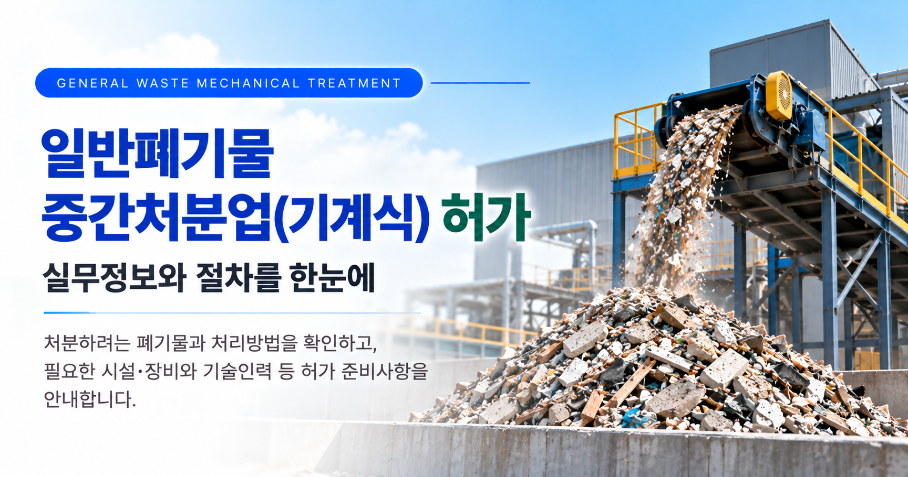
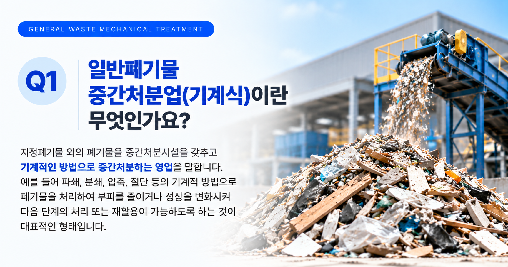
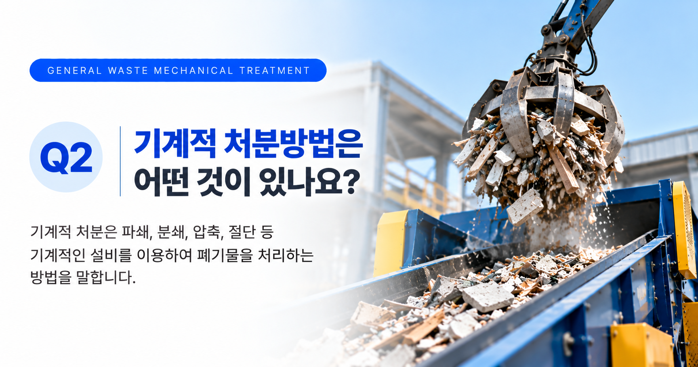
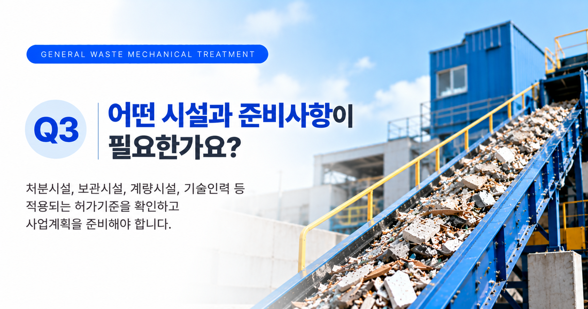

일반폐기물 중간처분업(기계식)을 준비할 때는 기계부터 먼저 결정하기보다 어떤 폐기물을 어떤 방법으로 처리할 것인지부터 구체적으로 정하는 것이 중요합니다. 처분대상 폐기물과 처리공정이 정해져야 필요한 처분시설과 처리능력, 보관시설, 계량시설 및 기술인력 등의 허가기준을 구체적으로 검토할 수 있습니다.
01. 일반폐기물 중간처분업(기계식)이란?
지정폐기물 외의 폐기물을 중간처분시설을 이용하여 기계적인 방법으로 중간처분하는 영업을 말합니다.
실제 허가를 준비할 때는 폐기물의 종류와 성상, 사용하는 시설, 처리공정 등을 함께 검토하여 기계적 처분에 해당하는지를 확인해야 합니다.
먼저 확인할 사항
- 처분하려는 폐기물의 종류와 성상
- 지정폐기물 또는 건설폐기물 해당 여부
- 실제 적용할 기계적 처분방법
- 폐기물의 반입·보관·처분·반출 흐름
- 필요한 처분시설과 처리능력

02. 처분대상 폐기물을 먼저 확인합니다
중간처분업 허가에서는 어떤 폐기물을 처리할 것인지가 중요한 출발점입니다. 같은 기계설비를 사용하더라도 폐기물의 종류와 성상에 따라 적용되는 처리방법과 시설기준이 달라질 수 있습니다.
| 확인사항 | 검토내용 |
|---|---|
| 폐기물 종류 | 실제로 반입하여 처분하려는 폐기물을 구체적으로 확인합니다. |
| 폐기물 성상 | 고상·액상 등 폐기물의 상태와 특성을 확인합니다. |
| 폐기물 구분 | 지정폐기물 또는 건설폐기물 등에 해당하는지 확인합니다. |
| 처분 가능 여부 | 계획한 기계적 처분시설에서 해당 폐기물을 실제로 처리할 수 있는지 검토합니다. |
03. 기계적 처분방법과 처리공정을 정합니다
기계적 처분은 폐기물을 기계설비를 이용하여 파쇄·분쇄·압축·절단 등의 방법으로 처리하는 형태가 대표적입니다.
단순히 사용할 기계의 이름만 정하는 것이 아니라 폐기물이 사업장에 들어온 이후부터 처리 후 반출될 때까지 전체 공정을 정리해야 합니다.

04. 처분시설의 처리능력을 확인합니다
지정폐기물 외의 폐기물을 대상으로 하는 기계적 처분전문 중간처분업은 법령에서 처분시설의 최소 처리능력을 정하고 있습니다.
| 구분 | 기준 |
|---|---|
| 처분시설 | 시간당 처분능력 200kg 이상 |
| 보관시설 | 1일 처분능력의 10일분 이상 30일분 이하의 폐기물을 보관할 수 있는 규모 |
| 계량시설 | 1식 이상 |
| 수집·운반차량 |
1대 이상 ※ 처분대상 폐기물을 스스로 수집·운반하는 경우만 해당 |
따라서 처분시설을 먼저 구입하거나 설치하기보다 처분대상 폐기물과 처리공정을 확정한 후 실제 적용되는 시설기준과 처리능력을 확인하는 것이 좋습니다.
05. 보관시설과 계량시설도 함께 검토합니다
기계적 중간처분업은 처분기계만 갖추는 것으로 허가기준이 충족되는 것은 아닙니다.
반입된 폐기물과 처리된 폐기물을 적정하게 관리할 수 있도록 보관시설을 계획하고, 폐기물의 반입·반출량을 확인하기 위한 계량시설도 갖추어야 합니다.
- 폐기물 반입량과 예상 처리량
- 1일 처분능력
- 보관시설의 위치와 규모
- 처리 전·후 폐기물의 보관방법
- 계량시설의 설치계획
06. 기술인력의 자격요건을 확인합니다
기계적 처분전문 중간처분업은 법령에서 정한 기술능력을 갖추어야 합니다.
현재 기준으로 다음 자격 중 1명 이상의 기술인력이 필요합니다.
- 폐기물처리산업기사
- 대기환경산업기사
- 수질환경산업기사
- 소음진동산업기사
- 환경기능사
따라서 사업계획 단계에서 현재 보유한 인력의 자격을 확인하거나 필요한 기술인력의 확보계획을 함께 세우는 것이 좋습니다.

07. 폐기물 처리 사업계획서를 먼저 준비합니다
폐기물 중간처분업은 처음부터 허가신청을 하는 것이 아니라 먼저 폐기물 처리 사업계획서를 제출하여 사업계획의 적합 여부를 검토받는 절차를 거칩니다.
중간처분업의 사업계획서에는 처분대상 폐기물의 처분계획과 함께 시설 설치, 장비 및 기술능력의 확보계획 등을 구체적으로 반영해야 합니다.
사업계획 단계의 주요 검토사항
- 처분대상 폐기물의 종류와 성상
- 폐기물의 예상 반입량 및 처리량
- 기계적 처분방법과 전체 처리공정
- 처분시설의 종류와 처리능력
- 보관시설과 계량시설
- 필요한 경우 수집·운반계획과 차량
- 기술인력 및 자격요건
- 시설 설치와 관련된 다른 인허가 사항
08. 적합통보 후 허가기준을 갖추어 허가를 신청합니다
사업계획이 적합하다는 통보를 받은 후에는 계획한 시설·장비와 기술능력 등을 갖추고 폐기물 중간처분업 허가를 신청하게 됩니다.
허가신청 단계에서는 사업계획서에 기재한 내용과 실제 설치한 시설 및 장비, 처분공정과 기술인력 등이 서로 일치하는지 확인하는 것이 중요합니다.
허가신청 단계의 주요 자료
- 시설 및 장비명세서
- 처분시설 설치명세서와 도면 및 처분공정도
- 처분대상 폐기물의 처분공정도
- 기술능력 보유 현황 및 자격 증명자료
- 그 밖에 사업내용에 따라 필요한 신청자료
일반폐기물 중간처분업(기계식)을 준비하고 계신가요?
처분하려는 폐기물과 기계적 처리방법, 시설·장비 및 기술인력 등의 준비상태부터 사업계획서와 허가신청까지 필요한 사항을 확인해 보실 수 있습니다.
※ 일반폐기물 중간처분업(기계식)의 구체적인 허가기준과 제출자료 및 적용되는 행정절차는 처분대상 폐기물, 처분방법, 시설의 종류와 사업내용 등에 따라 달라질 수 있습니다. 실제 신청 전에는 최신 「폐기물관리법」 및 하위법령과 관할기관의 적용기준을 함께 확인하는 것이 좋습니다.